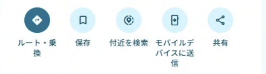
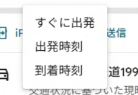

Dサポート / 外出活動
交通費計算・距離の調べ方
Google マップで車の走行距離を確認し、Dサポートへ数字を入力します。地図との自動連携はありません。
右クリックの「距離を測定」で出る直線距離ではありません。職員の人数は費用を分担する児童数に含めません。
1目的地を探して「ルート・乗換」を選ぶ
Google マップを開き、検索欄に施設名または住所を入力します。目的地が正しいことを確認し、「ルート・乗換」を選択してください。

ここを選択：左端の「ルート・乗換」。いただいた操作画面の画像を使用しています。
2出発地と「車」を指定する
出発地には事業所の住所を入力します。「現在地」のままにしないよう確認し、移動手段は車のアイコンを選択します。有料道路の利用有無も実際の外出計画に合わせてください。
設定の考え方を示す模式図です。実際の地図画面ではありません。
3予定の出発日時に合わせる（必要な場合）
日時を指定する場合は「すぐに出発」を開き、「出発時刻」に切り替えて外出日と出発予定時刻を入力します。交通状況によって候補ルートが変わるため、その日時で使うルートを確認します。

③時刻・日付を設定。画像内の「12:50」「10月2日」は操作例です。
日時指定は、目的地が1つのルートで利用できます。経由地がある場合は各区間の距離を確認して合計してください。
4実際に走るルートの「km」を読む
候補が複数ある場合は使用予定のルートを選び、経路情報に表示される距離を確認します。所要時間の「分」ではなく距離の「km」を控えます。
距離の見方の模式図（数値は説明用の例）
約20分 8.5 km ← この数値を使う
帰りも同じ距離なら「片道距離」を入力します。帰りの道が違う、途中に立ち寄るなどの場合は、行き・帰り・立ち寄り区間の距離を足し、「往復の合計距離」を入力してください。
5Dサポートの「交通費計算」に数字を入れる
ホームまたは画面メニューから「交通費計算」を開きます。片道距離、当日のガソリン単価、参加する児童の人数を入力し、使用車両にチェックします。
入力例（フリード・スペイドの2台を使用）
片道8.5km → 往復17kmとして自動計算
- 初期選択はフリード・スペイド。使わない車両のチェックは外します。
- 燃費の初期値はExcelの登録値です。実際の車両に合わせて変更できます。
- 高速・駐車場代は往復分を入力します。車両ごとに金額が異なるときは、各車分を合計して「全車合計」を選びます。
- 全車の追加費用が同じ金額なら「1台あたり」を選べます。入力額に使用台数を掛けます。
総費用 ＝ 使用車両のガソリン代合計 ＋ 高速・駐車場代
児童1人あたり ＝ 総費用 ÷ 利用児童数
6金額を確認してコピー・印刷する
上部に総費用と児童1人あたりの集金目安が表示されます。端数処理は1円単位の四捨五入、または1・10・100円単位の切り上げから選べます。
四捨五入の集金目安：52円 × 8名 = 416円（総費用との差 −0.89円）
1円切り上げの集金目安：53円 × 8名 = 424円（総費用との差 ＋7.11円）
「計算内訳」で各車の費用と集金額との差を確認します。「結果をコピー」で連絡文へ貼り付け、「印刷」で紙やPDFに出力できます。